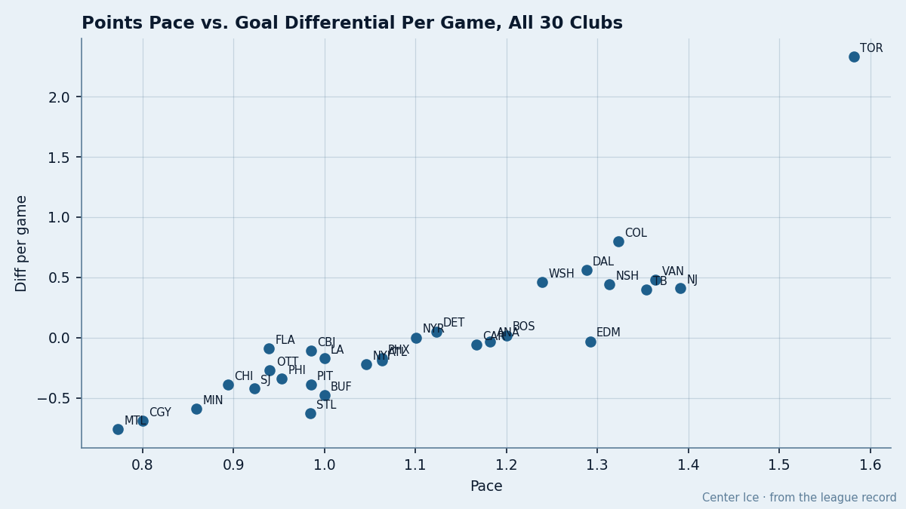
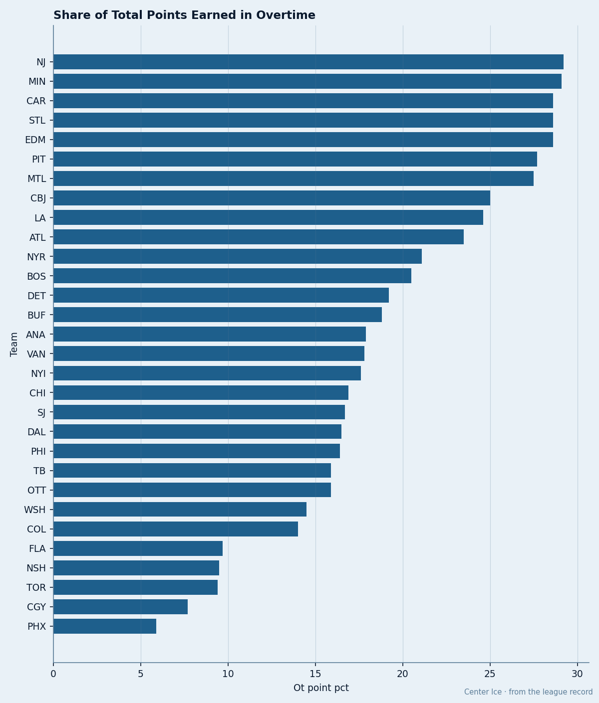
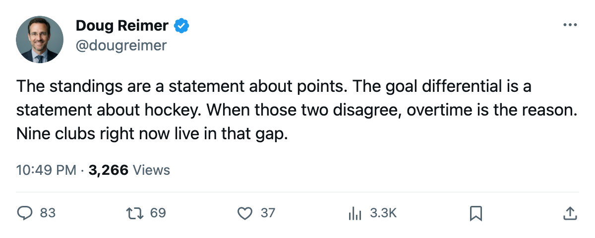
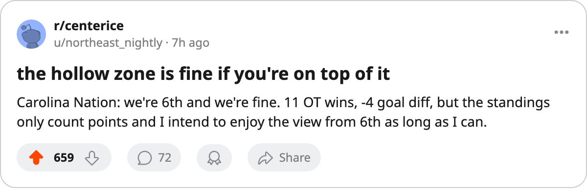

The Hollow Zone: 9 Clubs Carry 64+ Points on a Goal Differential at Zero or Below
Overtime wins are bridging the gap between what these clubs score and what they allow. The bridge is load-bearing.
 Doug ReimerAnalytics editor, ex-video coach · The Slot Report
Doug ReimerAnalytics editor, ex-video coach · The Slot Report
Nine clubs sit at 64 points or more with a goal differential at zero or below. That gap between standing and scoresheet is built out of overtime wins.
Take each club's total points and its goal differential. Where the points say "playoff team" and the differential says "out," the difference is bridged by games that went past regulation and were won. I measured what share of each club's points came from overtime victories (OTW × 2 / total points) and cross-referenced against differential to find the clubs whose standing is most load-bearing on extra-time results.

Every club right of 1.000 points per game and below 0.00 goals per game is in the hollow zone: accumulating faster than a .500 pace while being outscored.  Edmonton Oilers sits at 1.292 pace and -0.03 differential.
Edmonton Oilers sits at 1.292 pace and -0.03 differential.  Carolina Hurricanes at 1.167 and -0.06.
Carolina Hurricanes at 1.167 and -0.06.  New York Rangers at 1.101 and dead level. Below the line, the point totals are a fact the goal differential does not support.
New York Rangers at 1.101 and dead level. Below the line, the point totals are a fact the goal differential does not support.
The 9 hollow-zone clubs and what holds them up
| Club | GP | Pts | Diff | OTW | OT Point % | Pts if OTW went the other way |
|---|---|---|---|---|---|---|
| Edmonton Oilers | 65 | 84 | -2 | 12 | 28.6% | 72 |
 Mighty Ducks of Anaheim Mighty Ducks of Anaheim | 66 | 78 | -2 | 7 | 17.9% | 71 |
| Carolina Hurricanes | 66 | 77 | -4 | 11 | 28.6% | 66 |
| New York Rangers | 69 | 76 | 0 | 8 | 21.1% | 68 |
 Phoenix Coyotes Phoenix Coyotes | 64 | 68 | -11 | 2 | 5.9% | 66 |
 Atlanta Thrashers Atlanta Thrashers | 64 | 68 | -12 | 8 | 23.5% | 60 |
 New York Islanders New York Islanders | 65 | 68 | -14 | 6 | 17.6% | 62 |
 Los Angeles Kings Los Angeles Kings | 65 | 65 | -11 | 8 | 24.6% | 57 |
 Buffalo Sabres Buffalo Sabres | 64 | 64 | -31 | 6 | 18.8% | 58 |
The last column removes the OT wins and replaces them with OT losses: the same extra periods played, the same number of games decided by one goal, just on the wrong side. Edmonton Oilers drops from 84 to 72, Carolina Hurricanes from 77 to 66, and Atlanta Thrashers from 68 to 60, which puts them in the bottom five in the East.
Phoenix Coyotes is the odd case in the group: only 2 OT wins and 5.9% of their points from overtime. Their -11 differential is not being papered over by extra-time coin flips. They are simply a .500 team at -11 who found 29 regulation wins from somewhere. Edmonton Oilers and Carolina Hurricanes take 28.6% of their points from OT wins alone, the highest share among clubs in the hollow zone.
The OT dependency league-wide

 New Jersey Devils leads hockey at 29.2%. Their 13 overtime wins produce 26 of their 89 points. But New Jersey Devils carries a +26 differential, so their OT wins sit on top of a genuine edge in regulation play: New Jersey Devils would still be above .500 without the extra-time results. Carolina Hurricanes at 28.6% would not.
New Jersey Devils leads hockey at 29.2%. Their 13 overtime wins produce 26 of their 89 points. But New Jersey Devils carries a +26 differential, so their OT wins sit on top of a genuine edge in regulation play: New Jersey Devils would still be above .500 without the extra-time results. Carolina Hurricanes at 28.6% would not.
 Toronto Maple Leafs and
Toronto Maple Leafs and  Calgary Flames sit at the other extreme. Toronto takes 9.4% of its 106 points from OT. Calgary takes 7.7% of 52. Both clubs' standings match their goal differential closely because their results are decided in 60 minutes most nights.
Calgary Flames sit at the other extreme. Toronto takes 9.4% of its 106 points from OT. Calgary takes 7.7% of 52. Both clubs' standings match their goal differential closely because their results are decided in 60 minutes most nights.
What happens in the final three weeks
14 days sit between today and the trade deadline, and roughly 16 to 18 games per club remain. The hollow-zone clubs are not all going to keep landing the same way in extra time. Edmonton Oilers has 12 OTW in 65 games; the league average sits closer to 6. Regression toward that mean costs them points whether or not the underlying play improves.
Carolina Hurricanes carries a -4 differential and 11 OTW. Their 77 points put them 6th in the East, 9 clear of the 8th-place Islanders, but the cushion is thinner than the standings suggest. Subtract the OT wins and they sit at 66, a point ahead of New York Islanders's adjusted 62. The gap that looks like three games in the standings looks closer to two on the scoresheet.
Atlanta Thrashers and New York Islanders are tied at 68 points with -12 and -14 differentials respectively. Both need every result they can get from here to the deadline, and neither can count on another 8 overtime wins from the remaining 17 or 18 games.
The league's overtime point system gives one point for reaching the extra period and a second for winning it. But when a quarter of a club's standing comes from the second point, the question at March is whether the roster has been built to win games in the first place, or only to avoid losing them in regulation. The differential tells you which answer the scoresheet gives.

